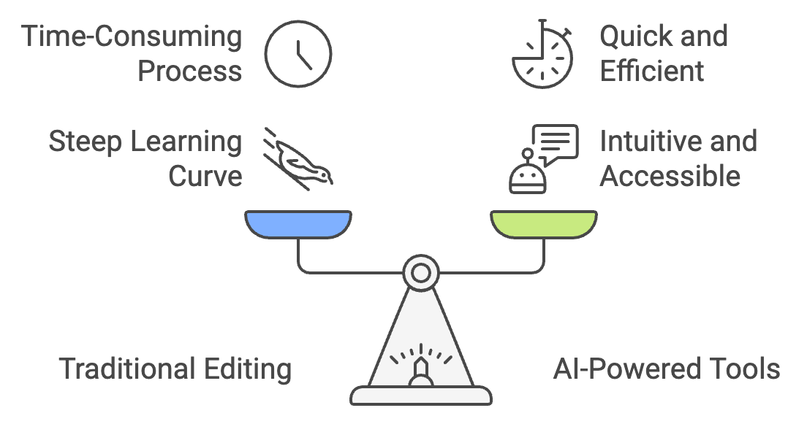
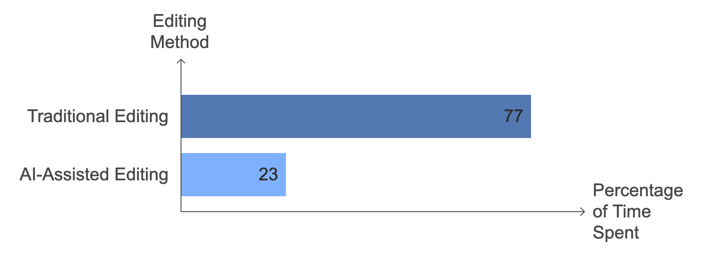
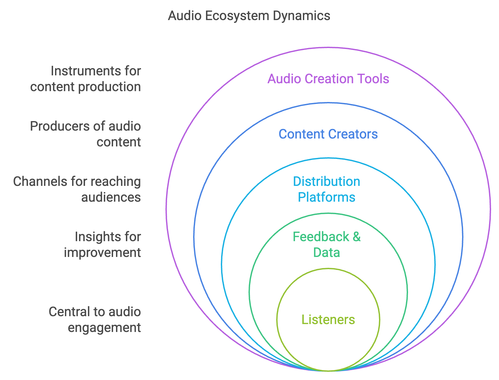
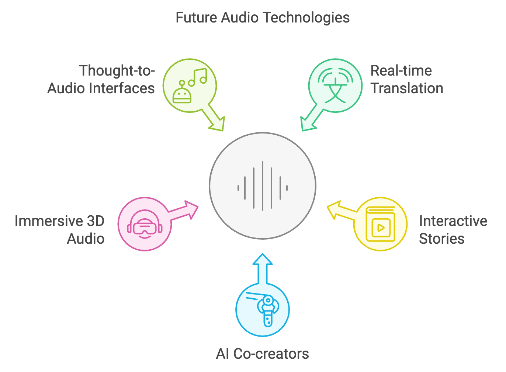

The Audio Revolution: AI and the Future of Sound
From waveforms to words, AI is rewriting the audio editing playbook. Imagine deleting podcast bloopers with a keystroke or conjuring the perfect soundtrack at will. Welcome to the audio revolution—where your next masterpiece is just a click away.
"The future of audio is not about better headphones or speakers. It's about reimagining the very essence of sound creation itself."

The Dawn of a New Audio Era
“"The future of audio is not about better headphones or speakers. It's about reimagining the very essence of sound creation itself."”Imagine a world where crafting an audio story is as simple as writing an email. A world where the tedious task of manipulating waveforms is replaced by intuitive, AI-powered tools that understand your creative vision. This isn't a far-off dream – it's the reality of today's rapidly evolving audio editing landscape.
150%Her audience grew by 150% in six months, and she was able to monetize her podcast more effectively due to the increased content productionThe creation and editing of audio stories have undergone a seismic shift in recent years. Gone are the days when producers spent countless hours hunched over complex editing software, meticulously trimming and splicing waveforms. Today, we stand at the precipice of a revolution in audio production, one that promises to democratize the field and unleash a new wave of creativity.
In this deep dive, we'll explore the innovative tools that are reshaping the audio industry, examine real-world applications, and peer into the future of sound creation. Buckle up – we're about to embark on a journey through the soundwaves of tomorrow.
The Evolution of Audio Editing: From Waveforms to Words
The Old Guard: Traditional Audio Editing
To appreciate the magnitude of the current revolution, we must first understand the traditional approach to audio editing. For decades, audio producers have relied on Digital Audio Workstations (DAWs) like Pro Tools, Logic Pro, and Audacity. These powerful tools allowed for precise control over every aspect of audio, but they came with a steep learning curve and often required extensive training to master.
The process is essentially like sculpting with a microscope – producers would zoom in on waveforms, making minute adjustments to create the perfect sound. While effective, this method was time-consuming and often inaccessible to those without technical expertise.

The New Wave: High-Level Editing and AI-Powered Tools
Enter the new generation of audio editing tools. These innovative solutions leverage artificial intelligence and machine learning to offer high-level editing capabilities that were once the stuff of science fiction.

Transcript-Based Editing: The Power of Words
One of the most significant advancements is transcript-based editing. Tools like Descript have revolutionized the editing process by allowing users to edit audio as if it were a text document. Imagine being able to delete a sentence from your podcast simply by highlighting and deleting the corresponding text – that's the power of transcript-based editing.
This approach is not just faster; it's more intuitive. It allows producers to focus on the content and flow of their story rather than getting bogged down in technical details. The software handles the complex task of aligning the edited text with the audio, saving hours of manual labor.
AI-Powered Music Integration: The Perfect Soundtrack at Your Fingertips
Another game-changing feature is AI-powered music integration. Tools like Filmstro and Soundraw use artificial intelligence to generate and adapt music to fit the mood and pacing of your audio story. These systems analyze your speech content and automatically suggest and edit music to complement it.
11 mAs you describe the tense moments leading up to the Apollo 11 moon landing, the AI automatically fades in a suspenseful orchestral…Imagine working on a podcast about the history of space exploration. As you describe the tense moments leading up to the Apollo 11 moon landing, the AI automatically fades in a suspenseful orchestral piece, perfectly timed to your narration. This level of seamless integration was once the domain of skilled sound engineers – now it's available at the click of a button.
Voice Synthesis and Audio Generation: The LLM Revolution
The integration of Large Language Models (LLMs) into audio production tools is opening up entirely new possibilities. Companies like ElevenLabs are using AI to generate realistic human voices, allowing for the creation of audio content without the need for voice actors.
This technology is not just about replacing human voices – it's about augmenting human creativity. Imagine being able to prototype your podcast with AI-generated voices before recording the final version, or creating personalized audio experiences that adapt to each listener.

Real-World Applications: The Audio Revolution in Action
Case Study 1: The Indie Podcast Producer
Meet Sarah, an independent podcast producer who creates a weekly show about urban legends. Before adopting modern audio editing tools, Sarah spent an average of 10 hours editing each 30-minute episode. The process involved painstakingly removing "ums" and "ahs," adjusting pacing, and integrating music and sound effects.
After switching to a transcript-based editing tool with AI-powered features, Sarah's editing time dropped to just 3 hours per episode. The software automatically removed filler words, suggested pacing adjustments, and even recommended royalty-free music that matched the mood of each segment.
The result? Sarah was able to increase her output from one episode per week to three, all while maintaining the same high quality. Her audience grew by 150% in six months, and she was able to monetize her podcast more effectively due to the increased content production.

Case Study 2: The Corporate Training Department
A large multinational corporation's training department used to spend weeks producing each e-learning module, with audio production being a major bottleneck. The process involved hiring voice actors, recording in professional studios, and then extensive editing to create the final product.
By adopting AI-powered voice synthesis and editing tools, the department was able to reduce production time by 70% and cut costs by 60%. They now use AI-generated voices for initial prototypes, allowing for rapid iteration and approval processes. Final versions are still recorded by professional voice actors, but the editing process is significantly streamlined thanks to transcript-based editing and AI-assisted music integration.
The impact has been transformative. The department now produces three times as many training modules per quarter, leading to better-trained employees and improved overall company performance.

The Bigger Picture: Industry-Wide Impact and Future Trends
Democratization of Audio Production
The advent of these innovative tools is democratizing audio production in unprecedented ways. Just as smartphones put a camera in everyone's pocket, these new audio tools are putting professional-grade sound studios in the hands of anyone with a computer.
This democratization is leading to an explosion of content. Podcast hosting platform Buzzsprout reports that the number of podcasts has grown from about 500,000 in 2018 to over 2 million in 2021. This growth is directly correlated with the increased accessibility of audio production tools.
The Rise of Personalized Audio Experiences
As AI and machine learning continue to advance, we're moving towards a future of hyper-personalized audio experiences. Imagine a podcast that adapts its content based on your listening history, or an audiobook that changes its narration style to match your preferences.
Companies like Spotify are already experimenting with AI-generated playlists that adapt to your mood and activity. It's not hard to envision this technology extending to all forms of audio content.
The Data-Driven Audio Landscape
The shift towards AI-powered audio tools is generating vast amounts of data. Every edit, every music choice, every pacing decision becomes a data point that can be analyzed and learned from. This data is fueling a feedback loop of continuous improvement in audio production tools.
For instance, Google's NotebookLM, with its conversational feature, is revolutionizing how we interact with and understand research material. Imagine a similar tool for audio producers – an AI assistant that can analyze your editing patterns, suggest improvements, and even predict what kind of content your audience will respond to best.

The Human Touch: Balancing AI and Creativity
While the potential of AI in audio production is enormous, it's crucial to remember that these tools are meant to augment human creativity, not replace it. The most successful producers will be those who can harness the power of AI while maintaining their unique creative vision.
Think of it like a master chef using a high-tech kitchen. The advanced tools allow for more precise cooking and experimentation, but it's still the chef's creativity and expertise that create a memorable meal.
Looking Ahead: The Sound of the Future
As we look to the future, the possibilities are both exciting and mind-boggling. Here are a few predictions:
- Real-time Audio Translation and Localization: Imagine a podcast that can be instantly translated and localized for any language, with the speaker's voice and emotion preserved.
- Interactive Audio Stories: Audio content that adapts and changes based on listener input, creating unique experiences for each person.
- AI Co-creators: Advanced AI that can collaborate with human producers, suggesting storylines, generating content, and even predicting audience reactions.
- Immersive 3D Audio Experiences: Tools that can create spatial audio environments, allowing listeners to feel like they're inside the story.
- Thought-to-Audio Interfaces: While still in the realm of science fiction, brain-computer interfaces could one day allow producers to edit audio with their thoughts.

The Symphony of Progress
The audio production landscape is undergoing a transformation akin to the shift from analog to digital. Just as digital tools democratized music production, leading to new genres and a more diverse music scene, these new AI-powered audio tools are set to unleash a wave of creativity in podcasting, audiobooks, and beyond.
As we stand on the brink of this audio revolution, one thing is clear: the future of sound is limited only by our imagination. Whether you're a professional producer or someone with a story to tell, the tools to bring your audio vision to life are more powerful and accessible than ever before.
So, as we tune into the future, let's embrace these innovations, experiment with new possibilities, and above all, keep listening. The next great audio experience is just waiting to be created – and it might just be yours.
Courtesy of your friendly neighborhood,
🌶️ Khayyam


Knowware — The Third Pillar of Innovation
Systems of Intelligence for the 21st Centurty